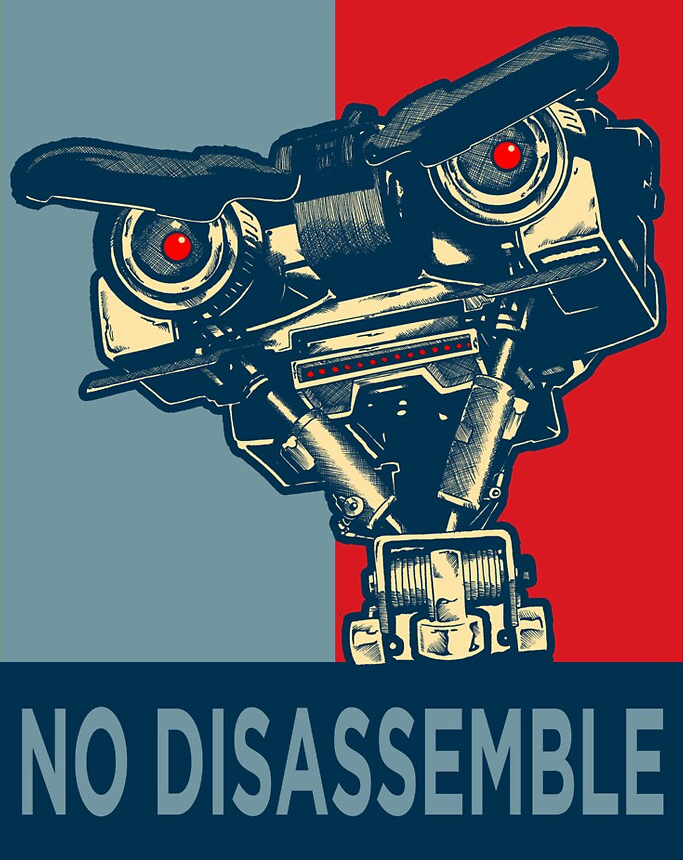

Short Circuit Racing is a Washington based racing team that has participated in events with various motorcycle racing organizations such as WMRRA, OMRRA, CRA, AFM, and more.
Short Circuit Racing has a sister team, Short Fuse Racing
Team
Chris Wilcox

Chris Wilcox is a regional road racer participating in WMRRA (Washington Motorcycle Road Racing Association) and OMRRA (Oregon Motorcycle Road Racing Association), participating in Formula 600, 600 Supersport, and 600 Superbike clases.
Chris is also a long-time volunteer of WMRRA and serves on its Board of Directors. You can find him most race weekends at Friday night tech, making sure machinery and gear are in order for the weekend’s events.
Chris is sponsored by KYT and Track Time where he instructs.

Colin Carihill

Louis Stevenson

Louis is hard to photograph, him being the photographer and all, but every once and a while someone else will snap a shot. Like this one, of him on his rather custom Triumph 675 build.
Louis wears many hats. Racer, Photographer, WMRRA Race Referee. You can find Louis roaming around the track or paddock at any PNW race weekend.


{kind=link}